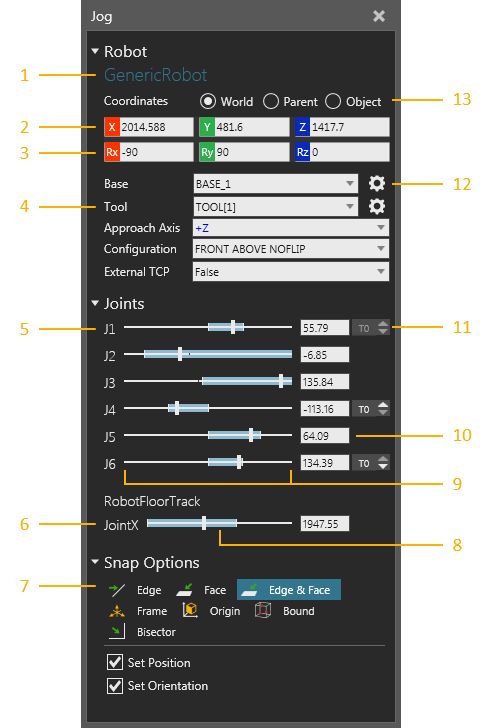
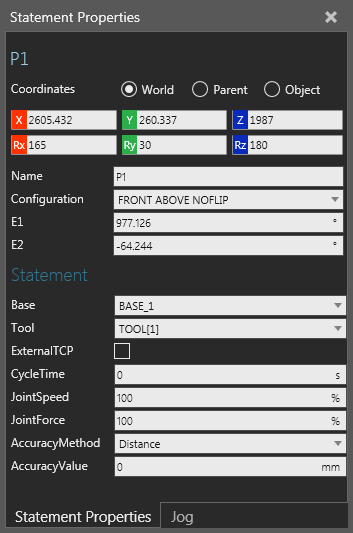
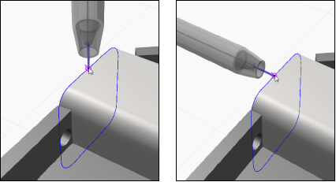
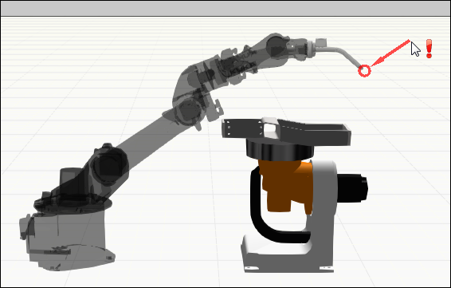

The Jog panel is used with the Jog command to allow you to manipulate, configure and teach a robot in the 3D world.

| 1. | Name of Selected Robot |
| 2. | Position Values of TCP/End of Arm |
| 3. | Orientation Values of TCP/End of Arm |
| 4. | Configuration of Robot and Manipulator |
| 5. | Joints of Selected Robot |
| 6. | Connected External Joints |
| 7. | Snap Options for Manipulator |
| 8. | Min and Max Values Reached by Joint in Current State |
| 9. | Min and Max Range of Joint |
| 10. | Joint Value |
| 11. | Increment Joint Value |
| 12. | Select Active Base/Tool in 3D World |
| 13. | Coordinate System |
The manipulator of a robot allows you to jog a robot and teach positions using base and tool frames. A base frame acts as a fixed point in space for simplifying robot positions. Generally, base frames are located at a Robot World Frame, which is either at the bottom or belly of a robot. In some cases, base frames can be attached to nodes in other components. For example, base frames can be attached to pallets, workpieces and nodes in an external kinematics component connected to a robot.
A tool frame acts as a tool center point (TCP) and for teaching robot positions. Generally, tool frames are located at the flange node/mount plate of a robot or at the center point and tip of a mounted tool. In most cases, a tool frame is used as the origin of the manipulator, which can then be used to move both the robot and tool frame in the 3D world. The large arrows of the manipulator will reference the active coordinate system in the Jog panel, while the smaller arrows will reference the tool coordinate system.

One method of teaching a position is to reference a base coordinate system and calculate the distance to the active tool frame and its orientation. In those cases, the manipulator moves a robot and active tool frame to that position. A base frame is the parent of that position, so moving the base frame would in turn move that and any other position attached to it. If you were to select a robot position in the 3D world or in the Program Editor panel, the robot would snap to that position.
Tip: Use the Lock Positions To World command to not have robot positions move in the 3D world when you change the location of a robot, base frame or any other object referenced by those positions. Use the Select command to select a robot position and not have its owning robot snap to that position.

In some cases, a tool frame can be attached to nodes in other components and used as an external TCP. For example, you can attach a tool frame to a stationary tool, thereby a robot orients itself around a fixed point in space. In some cases, the roles of base and tool frames would be switched, so that a tool frame is used as a BASE and a base frame is used as a TCP. As a result, a robot position would inherit the orientation of a base frame.

When snapping the manipulator, the Approach Axis property of the robot defines how to orient the robot based on the orientation of the active tool frame. For example, a common orientation for a tool frame is to point down along its positive Z-axis direction.

Generally, you would change the approach axis of a robot to get different results.

When you try to move the manipulator to a point that is unreachable by a robot, an error will be displayed in the 3D world and point back to the origin of the manipulator.

Likewise, an unreachable robot position in the 3D world will be highlighted red.